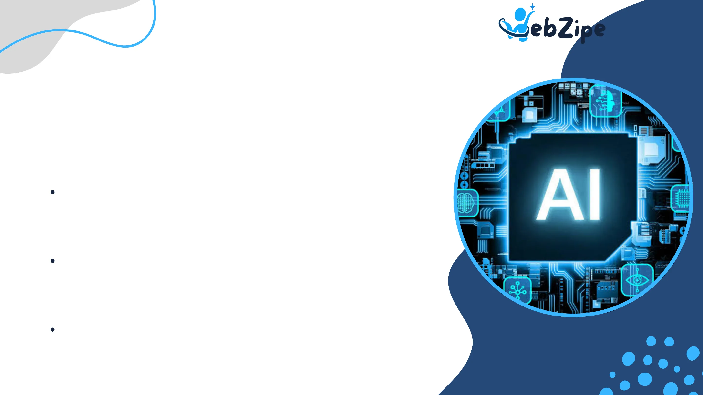
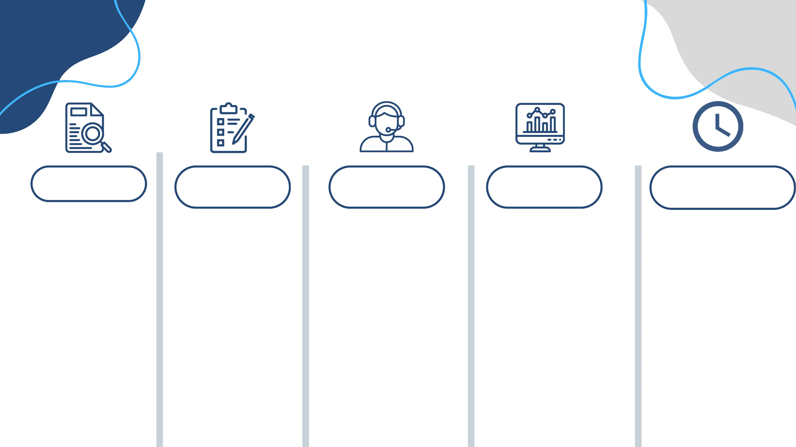

WEBZIPE
¿QUÉ ES
WEBZIPE?
WebZipe se creó con el fin de demostrar
que la IA es una herramienta que puede
facilitar la vida de cada uno mientras se
use correctamente. En WebZipe buscamos
crear soluciones digitales

¿LA INTELIGENCIA ARTIFICIAL
REEMPLAZARA AL
SER HUMANO?
El debate sobre si la inteligencia artificial (IA) sustituirá a las personas se
ha intensificado por cambios muy visibles en poco tiempo:
Avance acelerado de la automatización: Los modelos actuales ya no
solo realizan cálculos repetitivos o tareas mecánicas; también
redactan textos, analizan datos complejos, programan, diseñan y
asisten en atención al cliente o diagnóstico inicial.
Reducción de costos y mayor velocidad: Muchas empresas ven en la
IA una forma de operar las 24 horas, reducir tiempos de entrega y
disminuir gastos operativos, lo que genera temor sobre recortes de
personal o menor contratación junior.
Incertidumbre sobre el futuro del trabajo: Cuando una herramienta
iguala o supera la velocidad de ejecución de una tarea humana,
surge la duda lógica de qué pasará con miles de empleos
tradicionales y qué nuevas profesiones nacerán para compensarlos.
¿LA INTELIGENCIA ARTIFICIAL
REEMPLAZARA AL
SER HUMANO?
A pesar de su potencia, la IA tiene límites fundamentales que impiden que sustituya
por completo lo que significa ser humano:
Falta de conciencia, empatía y juicio ético real: Una IA procesa patrones y
probabilidades, pero no siente emociones, no vive experiencias ni asume
responsabilidad moral por las consecuencias de una decisión.
Creatividad con propósito y contexto vital: Aunque puede generar ideas o estilos
a partir de datos existentes, el arte, el liderazgo y la innovación genuina nacen
de la intuición, la cultura, la empatía y la voluntad de transformar una realidad.
Relaciones humanas y confianza: En la educación, la salud, la negociación, el
liderazgo comunitario o el trabajo en equipo, las personas buscan conexión
auténtica, criterio humano y confianza mutua que un algoritmo no puede replicar.
Dependencia de la dirección humana: La IA necesita objetivos bien definidos,
preguntas inteligentes, verificación crítica y supervisión constante. Sin criterio
humano, puede cometer errores convincentes o amplificar sesgos.
EL RIESGO
El verdadero riesgo: ser desplazado por no adaptarse
La inteligencia artificial no suele desplazar de golpe a toda la
humanidad, sino a quienes deciden ignorarla o resistirse a
aprender cómo integrarla.
Quien se niega a entender qué hace bien la IA, cómo darle
instrucciones claras o cómo revisar críticamente sus resultados
pierde ventaja frente a alguien que sí combina su criterio humano
con estas herramientas. En la práctica, el cambio no es máquina
contra persona, sino personas que saben usar la IA frente a
personas que no se adaptan. Aprender a convivir con ella,
desarrollar pensamiento crítico y fortalecer las habilidades
propiamente humanas es lo que marca la diferencia.
¿PORQUÉ SON
IMPORTANTES LAS
AUTOMATIZACIONES?
Las automatizaciones son clave en una empresa
porque transforman tareas repetitivas y lentas
en procesos instantáneos, permitiendo que el
negocio crezca sin tener que multiplicar sus
gastos operativos en la misma proporción.
En el caso concreto de automatizar las
respuestas a clientes (por ejemplo, en
WhatsApp, Instagram o un sitio web), su
importancia se resume en cinco ventajas
directas:

VENTAJAS
Reducción de errores
Escalabilidad sin
Atencion
Filtro inteligente
Ahorro de tiempo para
y consistencia:
saturar al equipo
inmediata
de clientes
tareas de mayor valor:
Los mensajes
Un flujo automatizado
Un cliente que
Una sola persona
Al eliminar la carga de
automatizados
puede hacer
difícilmente puede
responder decenas de
pregunta por un
entregan siempre la
preguntas básicas
responder 50
veces "¿Cuánto
precio o un horario a
información correcta
iniciales (qué producto
mensajes al mismo
cuesta?" o "¿Hacen
las 11:00 p. m.
busca, en qué ciudad
(precios
tiempo sin cometer
envíos?", el equipo
obtiene respuesta al
está, cuál es su
errores o tardar
actualizados, enlaces
humano puede
instante. En ventas
presupuesto) y
horas. Una
de pago, políticas de
dedicarse a cerrar
digitales, responder
transferir al asesor
automatización
envío o requisitos),
ventas difíciles, fidelizar
en segundos evita
humano únicamente
atiende a cientos de
evitando olvidos o
clientes, mejorar el
cuando el cliente está
que el comprador se
usuarios
contradicciones
producto o resolver
listo para comprar o
simultáneamente con
enfríe y se vaya con la
comunes cuando se
reclamos delicados con
tiene un problema
el mismo tiempo de
competencia.
responde con afán.
verdadera empatía.
complejo.
respuesta.
LA I.A ES UN INSTRUMENTO NO UN
DESARROLLADOR
La IA no puede reemplazar a un desarrollador porque carece de
intención propia, comprensión real del contexto de negocio y
responsabilidad sobre el sistema que se construye. Puede acelerar mucho
la escritura de código, pero el rol de desarrollador implica tomar
decisiones que van mucho más allá de generar líneas funcionales.
Pensar en la IA como un copiloto o taller bien equipado —similar a un
compilador avanzado, un buscador o un generador de plantillas— ayuda
a usarla mejor: delegas lo repetitivo y exploratorio, pero conservas el
control del diseño, la calidad y el sentido del producto.
DIFERENCIA EN PRACTICA
Desarrollador
IA
Aspecto
(Creador /
(Instrumento)
Ingeniero)
Probabilidad y
Criterio, contexto y
Motor
patrones aprendidos
objetivos reales
Resolver un
Generar código o
Foco
problema de forma
respuestas
sostenible
plausibles
Puede introducir
Verifica, prueba,
fallos sutiles o
Revisión
integra y decide qué
alucinaciones
se acepta
Técnica, operativa
Responsabilidad
Ninguna
y de calidad